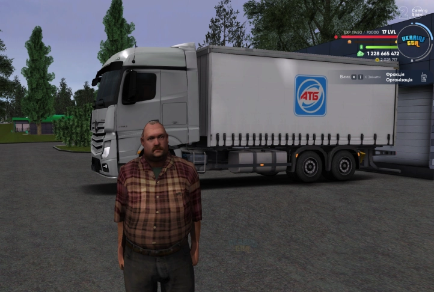

ОНЛАЙН ГРА ПРО УКРАЇНУ!
UKRAINE GTA - це реалістична онлайн гра про нашу країну, в якій відтворена вся краса наших міст, справжніх авто, де ти зможеш попрацювати на реально крутих роботах. Запрошуємо тебе відчути цю теплу атмосферу української гри та знайти серед українських гравців справжніх друзів!

1 Центральна Україна
700/700
2 Західна Україна
700/700
3 Східна Україна
700/700
4 Північна Україна
/700
чому ВАРТО ГРАТИ в UKRAINE GTA
Перший факт
УКРАЇНСЬКА МАПА
Ми розробляємо власну, унікальну карту вже майже рік. З перших хвилин гри ти зрозумієш, що знаходишся у рідній Україні, хоч і насправді перебуваєш за тисячі кілометрів від дому.
Зараз у грі є такі міста:
- Київ
- Харків
- Дніпро
- Бориспіль
- Конча-Заспа

Другий факт
РЕАЛЬНІ РОБОТИ ТА ПРОФЕСІЇ
Величезний вибір робіт для новачків та гравців із досвідом. Працюй у різних державних установах: від генерала
СБУ чи НПУ до слуги народу, стань міським головою та очоль місто. Або піди служити в ЗСУ — обороняй свою
маленьку країну в UKRAINE GTA. Подобається кримінал, є навіть і таке, викрадай елітні авто, але не потрапляй
до
рук поліції. Ти можеш стати будь-ким, тисячі професій таких як:
-
Далекобійник
Машиніст
Таксист
Фермер